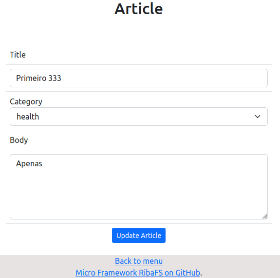

Valor default em select
Tenho um pequeno CRUD com PHP e MVC, MySQL e Bootstrap. Quero clicar no link edit do index e o form edit abrir com o select já com o valor default vindo do banco.
Tabela
Eu tenho uma tabela simples
create table articles(
id int primary key auto_increment,
title varchar(50) not null,
body text not null,
category enum('health', 'reflections','education') default 'reflections'
);
Edit do Controller
public function edit($field_id)
{
if (isset($field_id)) {
$Article = new Article('articles');
$fetch = $Article->fetch($field_id);
if ($fetch === false) {
$error = new \Core\ErrorController();
$error->index();
} else {
require_once APP . 'views/templates/header.php';
require_once APP . 'views/templates/menu.php';
require_once APP . 'views/articles/edit.php';
require_once APP . 'views/templates/footer.php';
}
} else {
header('location: ' . URL . 'article/index');
}
}
A view edit
No form edit eu preciso que, quando clicar num registro do index, ele já trazer o valor do campo property do select preenchido como default. Como o select é fixo e criado com o campo tipo enum do MySQL, eu apenas trago o valor no option selected, os demais options continuam fixos e disponíveis no select do form edit. Depois irei criar uma versão que tem um campo tipo varchar na tabela e usa um select dinâmico criado com o PHP e populando os options dinamicamente.
...
<form action="<?php echo URL; ?>article/update" method="POST">
<table class="table table-hover table-stripped">
<tr><td><label>Title</label></td></tr>
<tr><td><input class="form-control" type="text" name="title" value="<?php echo htmlspecialchars($fetch->title, ENT_QUOTES, 'UTF-8'); ?>" required autofocus/></td></tr>
<tr><td><label>Category</label>
<select class="form-select" name="category" aria-label="Default select category">
<option selected><?=htmlspecialchars($fetch->category, ENT_QUOTES, 'UTF-8')?></option>
<option value="health">Health</option>
<option value="reflections">Reflections</option>
<option value="education">Education</option>
</select></td></tr>
<tr><td><label>Body</label></td></tr>
<tr><td><textarea cols="10" rows="5" class="form-control" name="body" required /><?php echo htmlspecialchars($fetch->body, ENT_QUOTES, 'UTF-8'); ?></textarea></tr>
<input type="hidden" name="field_id" value="<?=htmlspecialchars($fetch->id, ENT_QUOTES, 'UTF-8')?>" />
<tr><td class="text-center"><input type="submit" name="submit_update_article" value="Update Article" class="btn btn-primary btn-sm"/></td></tr>
</table>
</form>
...
Veja como fica

Ao clicar no select Category, ele abre com os options health, refletions e education.
Nova versão
Depois de uma sugestão do colega Eduardo Romão no grupo PHP Brasil eu fui dar uma olhada no código e acabei criando um select cujos options vem de um array e não mais diretamente no HTML. Assim eu verifico cada option com um foreach e comparo com o valor que veio do banco. Casos ejam iguais eu removo o option do array e não mostro no select. Veja:
<tr><td><label>Category</label>
<?php
$options = ['health', 'reflections', 'education'];
?>
<select class="form-select" name="category" aria-label="Default select category">
<option selected><?=htmlspecialchars($fetch->category, ENT_QUOTES, 'UTF-8')?></option>
<?php
foreach($options as $key => $option){
if($option == $fetch->category){
// Remover o option do array, caso seja igual ao valor que vem do banco
unset($options[$key]);
}else{
print "<option value=\"$option\">$option</option>";
}
}
?>
</select></td></tr>
Micro Framework RibaFS
Este código é parte de um pequeno blog que estou criando com um pequeno framework PHP, MVC e Rotas que estou criando. Logo estarei divulgando e sua finalidade é criar aplicativos, blogs e sites usando uma estrutura MVC com rotas.
Até ...